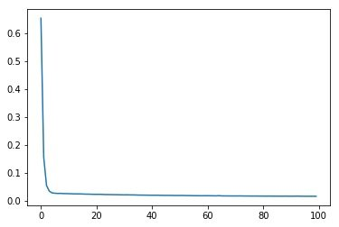

5.评估模型
5.1 使用History对象获取训练过程
使用keras进行模型训练时，会返回一个history对象，在history对象中，会记录模型在训练过程中参数的变化。我们可以使用history对象来绘制模型在训练过程中的loss函数的变化情况。
首先修改模型的训练代码，获取到返回的history对象。将训练模型的语句：
# 训练模型
model.fit(X_train, y_train,epochs=100)
替换为：
# 训练模型
history = model.fit(X_train, y_train,epochs=100)
重新运行 搭建模型、编译模型 和 训练模型的代码单元格，来获取训练过程
5.2 输出训练过程中loss的变化
选中 4.评估模型单元格，插入新的代码单元格，输入以下语句：
# 输出loss函数的变化
plt.plot(history.history['loss'])
一个可能的运行结果是：

坐标轴可能会有所不同，但函数的走势应该类似。
会看到loss函数有一个明显的收敛过程，那么证明目前的模型和训练是有效的。
5.3 在测试集查看loss函数的值
继续插入新的代码单元格，输入：
# 在测试集上loss函数的值
model.evaluate(X_test,y_test)
运行结果为：
可以看到这个损失函数值略大于训练最后的值，但基本属于比较低的值。因此，这个模型和训练的结果是可以采信的。
参考文献
1.Keras中文文档 https://keras.io/zh/